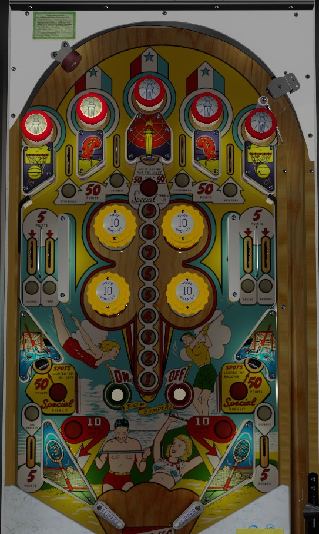

If playing for points, the only thing to really do is turn on the pop bumpers using the On rollover button near the left slingshot, then score as many 10s of points as you can from the bumpers and slingshots before the ball inevitably rolls over the Off button. If playing for replays, collect cities by rolling through lit rollover lanes: you only get credit for the top lanes by hitting a Spot standup target or rolling through a lane flanked by lit passive bumpers. In either case, watch for the feed from the upper side lanes, which loves nothing more than handing out center drains.
There are 10 cities to collect on Olympics, indicated by the 10 rollover lanes throughout the table. Roll through a lit lane to unlight it and collect its city.
The cities from the 4 top lanes can only be collected if the passive bumpers on either side of the lane are lit. Passive bumpers score 1 point, and every time 1 point is scored anywhere in the game, the location of the passive bumpers rotates. Rolling through a top lane always scores 50 points. Hitting the top center, lower left, or lower right standup targets score 50 points and spots whichever top lane is currently "selected" by the passive bumpers.
The other 6 cities- two upper left side lanes, two upper right side lanes, and the two out lanes- always score 5 points, and rolling through the lane at any time gives credit for the city in question.
Replays are given at either 7 and 9 cities collected, or 8 and 9 cities collected. If you collect all 10 cities, the three standup targets will be lit for Special for the rest of the game; Special cannot be set to be worth points, as far as I am aware, and always gives free games instead.
There are four pop bumpers in the center of the table. Pressing the On rollover button near the left slingshot at the bottom of the game lights all 4 bumpers and both slingshots. Bumpers and slingshots score 1 point when not lit, or 10 points when lit. Bumpers and slingshots stay on, even across balls, until the Off rollover button near the right slingshot is pressed. Getting the ball stuck in the nest of pop bumpers when they are lit for 10 points is surprisingly one of the most consistent and efficient routes to raw scoring in the game.
There are no out lanes. Flippers back up directly to the slingshots. 2-inch mini-flippers are used. The flipper gap is very wide, even compared to other games from the first half of the 1960s, making ball control a rare treat. By default, there is no center post between the flippers to help with this, either. The feeds from the upper side lanes on both sides like to direct the ball straight toward the center drain. Try to find a way to nudge the ball to bounce off these walls instead of roll down them to ensure the ball makes it to the flipper.
There is no end of ball bonus. Tilt ends game. No extra balls are available. Specials cannot be set to award an extra ball or a point value.